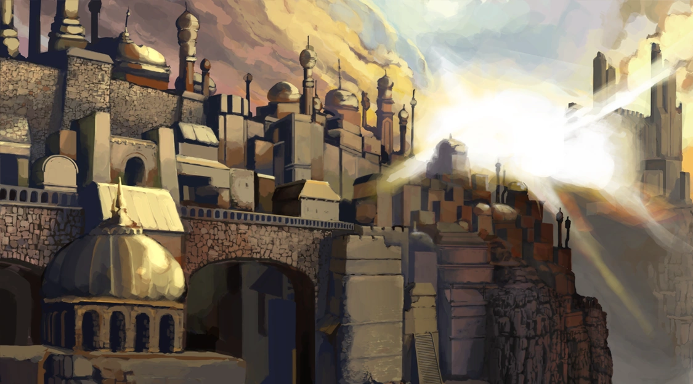
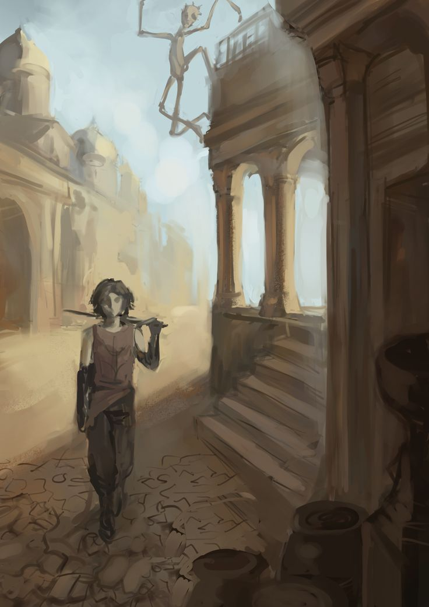
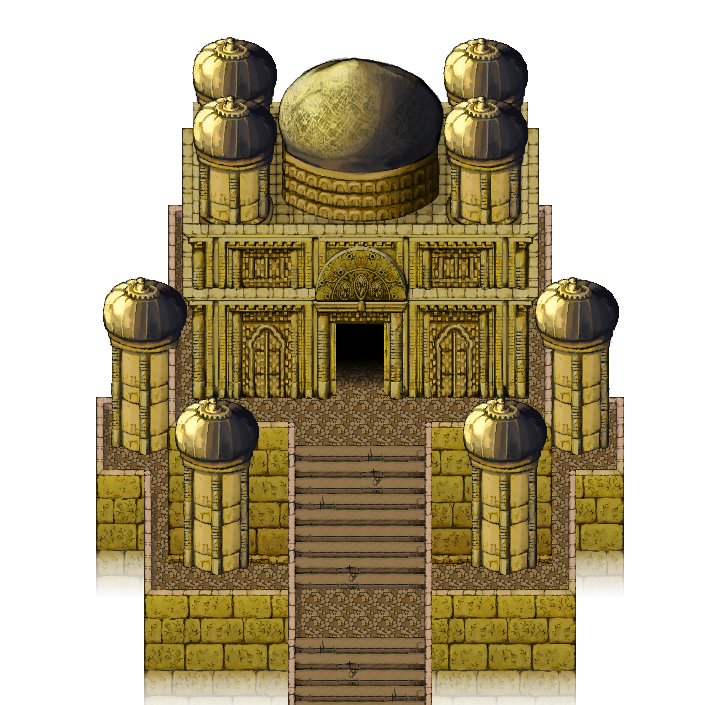

Galería de Imágenes
Explora la belleza de Ma'habre City a través de nuestra galería de imágenes, donde cada fotografía captura la esencia mística y la majestuosidad de esta ciudad divina.
Ma'habre City Vista Lejana

Ma'habre City Downtown

Ma'habre City Templo Principal
